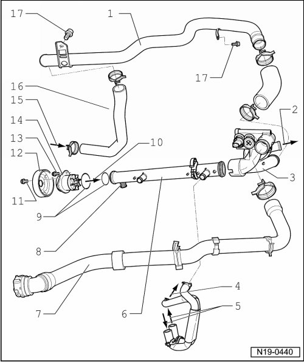

Cooling System Components, Engine Side, Assembly Overview
Cooling System Components, Engine Side, Assembly Overview

1 Coolant line
• Between thermostat housing and lower coolant hose
• Secured on cylinder block
• To remove, exhaust manifold must first be removed --> [ Exhaust Manifold and Exhaust Pipe with Catalytic Converters ] Exhaust Manifold and Exhaust Pipe with Catalytic Converters.
2 To expansion tank
3 Thermostat housing
4 To cylinder block
5 Connection for oil cooler
• --> [ (Item 4) Oil cooler ] Service and Repair
6 Coolant line
• Between coolant pump and thermostat housing
7 Upper coolant hose
• Secured to radiator with a quick coupling
• Ensure seated tightly
• Coolant hose connection diagram --> [ Coolant Hose Connection Diagram ] [1][2]Cooling System.
8 Sealing plug, 3 Nm
9 O-ring
• Replace
10 From coolant pump
11 20 Nm
• To loosen and tighten pulley counter-hold with punch through holes
12 Pulley
• For coolant pump
• Removing and installing --> [ Coolant Pump ] Service and Repair.
13 8 Nm
14 Coolant pump
• Check for ease of movement
• Removing and installing --> [ Coolant Pump ] Service and Repair.
15 From lower radiator
16 Lower coolant hose
• Ensure seated tightly
• Coolant hose connection diagram --> [ Coolant Hose Connection Diagram ] [1][2]Cooling System.
17 8 Nm